Using rclone to access OneDrive¶
Below is an example of using rclone to access the OneDrive network resource on the JHPCE cluster. The initial setup is a bit involved, but regular operation is fairly straightforward.
One-time Configuration¶
Before you start, you will need to have an X11 graphical environment set up either by using MobaXterm on a Windows system or Xquartz on a Mac. To start, login to the cluster as normal, and then srun into a compute node with a 10G RAM request (srun –pty –x11 –mem=10G bash ) . Part of the rclone setup process will involve using a web browser to generate an authentication key, so once you’ve logged into a compute node, run “chromium-browser &“. The ampersand at the end will cause Firefox to run run in the background. You may see a steam of warning message about “libGL errors”, but these are because we are using X11 forwarding and not a local graphics card, and assuming the browser stars up acter a few seconds, those messages can be ignored.
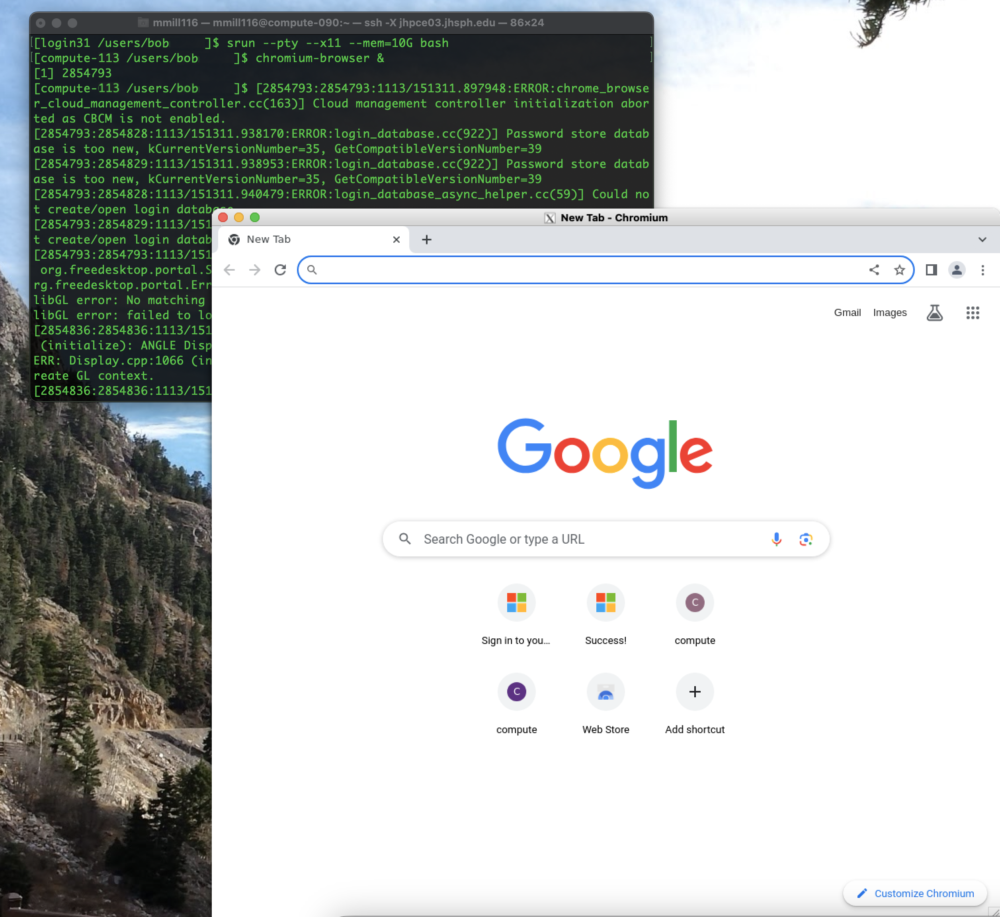
Now, from your srun session, you will need to run “module load go” to load the “go” module, and then run “rclone config” to begin the rclone setup.
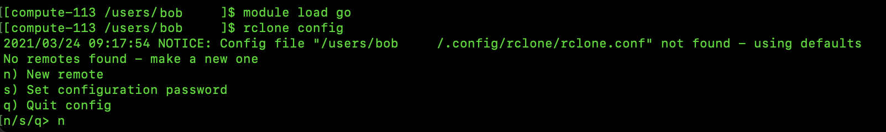
When prompted to “make a new remote”, enter “n” for “new remote”. When prompted for a name, enter something descriptive, like “OneDrive”. Next, you will be presented with a long list of storage types.
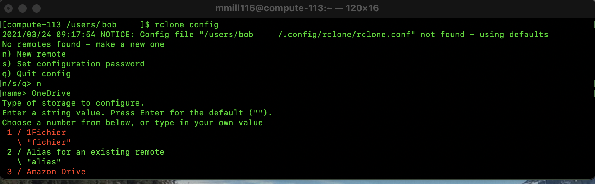
. . .
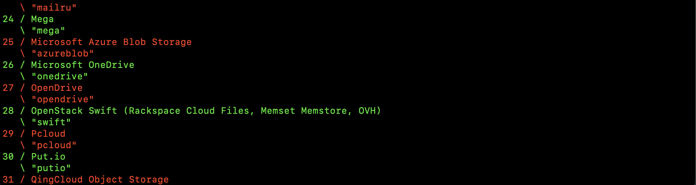
. . .
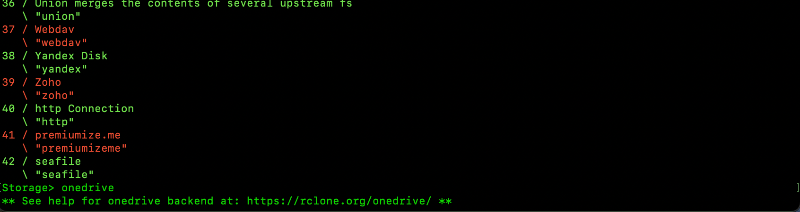
When prompted for the type of storage to use, enter “onedrive”. When prompted for “Oauth Client ID”, just hit enter. When prompted for “Oauth Client Secret”, just hit enter. When prompted to “Edit advanced config”, just hit enter to use the default “No” answer. When prompted to “Use auto config?”, enter “y”. At this point you’ll see a URL with “http://127.0.0.1” in the address, and get a message “Waiting for code…”
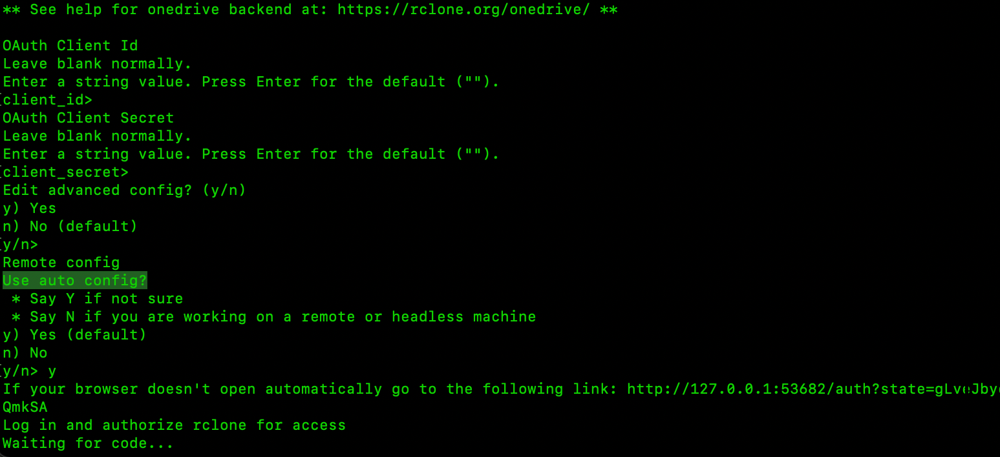
Also at this point, the Firefox browser should open a new tab, and start going to the http://127.0.0.1 address, which should redirect you to the Microsoft login page.
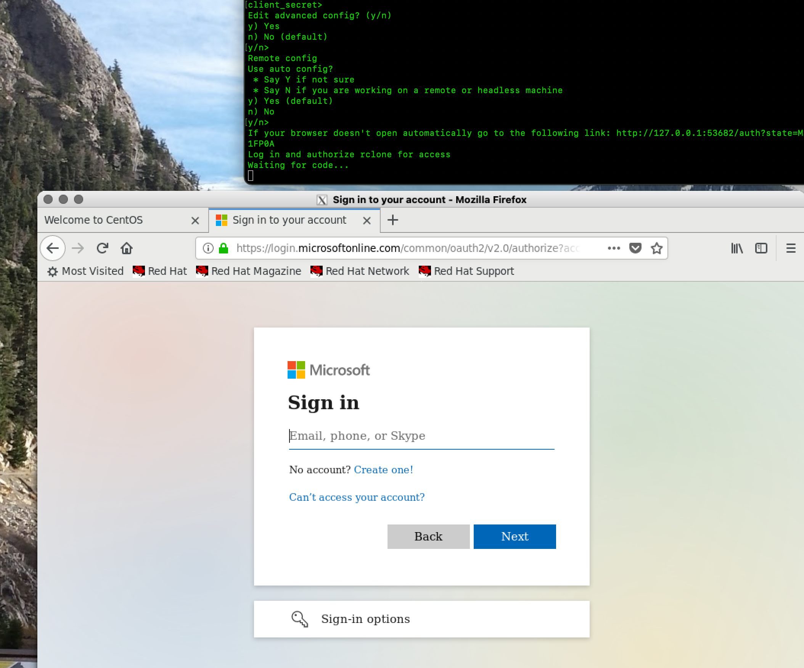
From here, you should enter “JHEDID@jh.edu”. Where of course you specify your own JHEDID. You will then be sent to the familiar “Johns Hopkins” JHED Login screen, where you should enter your JHED password.
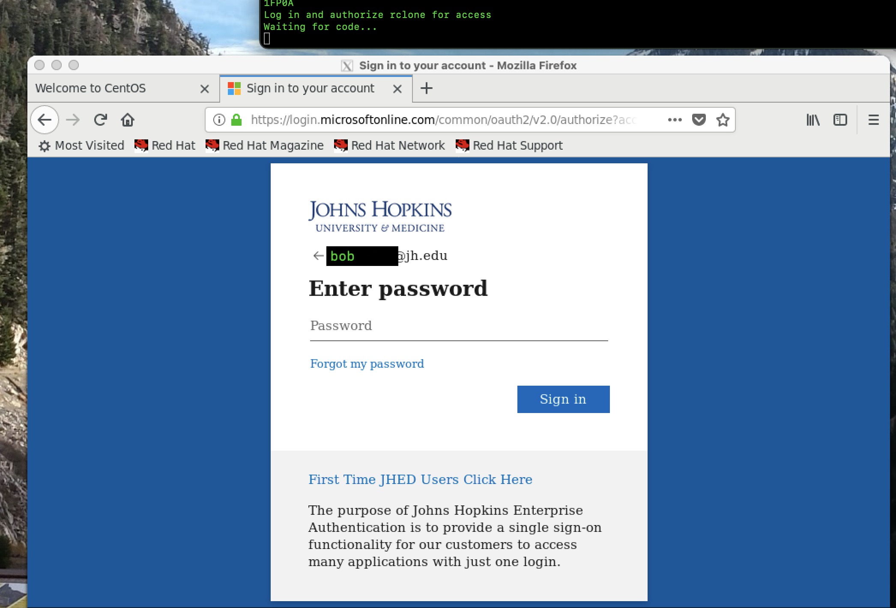
When prompted to “Save your login”, you should select “Don’t Save”. You should then see in the Firefox display, a “Success!” message, and in your “srun” session, you should see the message “Got code”, and then a selection of OneDrive site options. You should select option “1” for “onedrive”.
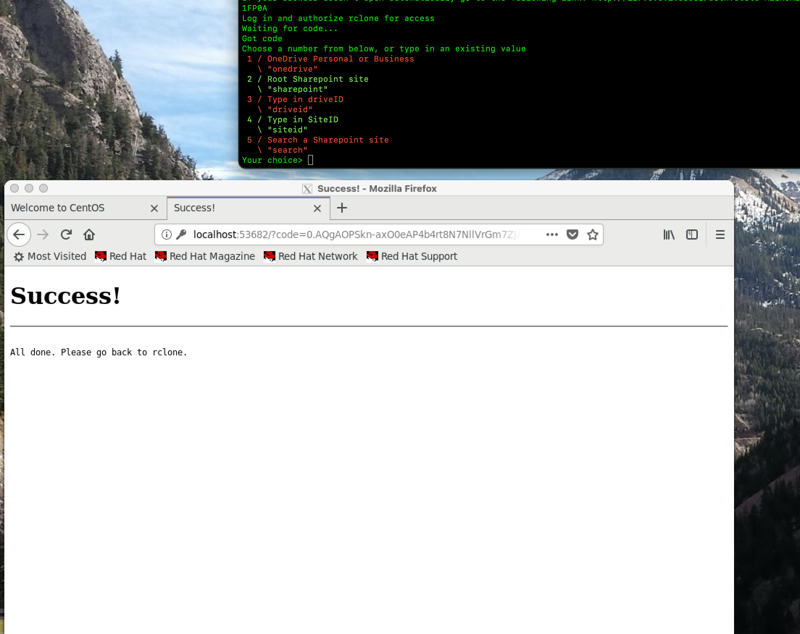
Next, you should see a message where you can select which drive to use. There should only be one drive, so select “0”. You will also get a confirmation message, and you should select “y”.
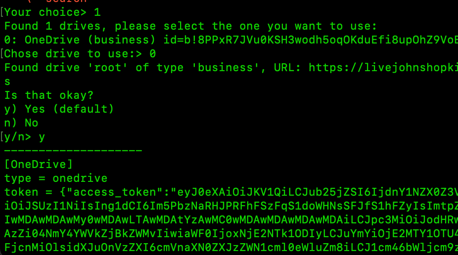
At this point a summary of the configuration will be displayed, and you should select “y” to accept the configuration. Finally, you can enter “q” to quit the config process, and you can also close the Firefox browser.
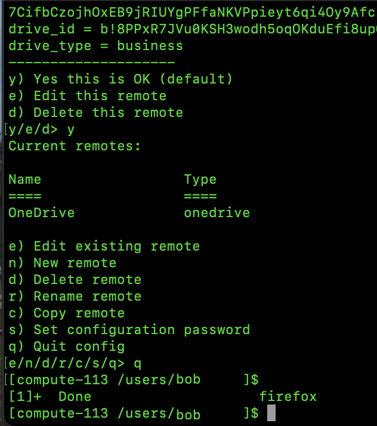
At this point your OneDrive connection has been configured, and you can start to access your OneDrive.
Regular Operation¶
To access your OneDrive, you’ll use the “rclone” command with various options. The most often used commands are “rclone lsd” to list directories, “rclone ls” to recursively list files (this can take a long time if you have a lot of files in OneDrive and you are listing the top lecel directory), and “rclone copy” to copy data between the cluster and your OneDrive.
An example of “rclone lsd” is below. There are a couple of key items to note. First, the name of the argument following “lsd” should be the same name your used for your OneDrive config. You can run “rclone listremotes” to see the name you used. The second item to note is that the name of your remote must end in a colon.
1 2 3 4 5 6 7 8 9 | |
1 2 3 4 5 6 7 8 9 10 11 12 13 14 15 16 | |
Finally “rclone copy” can be used to transfer files between your OneDrive and the JHPCE cluster.
1 2 3 4 5 6 7 8 9 10 11 12 13 14 15 16 17 18 | |
This should give you a good start on using “rclone” to access your OneDrive. Please email “bitsupport” if you have any questions.